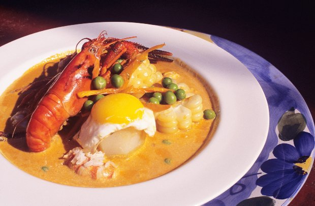

HISTORIA DE LA COCINA PERUANA
Hoy en día, cuando un visitante o incluso un peruano, se sienta a degustar alguno de los platos peruanos, quizá no sabe que está experimentando el resultado de una fascinante evolución de comidas y culturas.
Con la llegada de los españoles se introdujo a esta parte de América nuevas especies de animales,frutas y plantas. Esta fusión de la cocina inca con la española dio luz a la comida criolla.
En esta nueva cocina, síntesis de los dos continentes comenzaron a aparecer nuevos platos que han ido evolucionando de generación en generación. Por ejemplo, la Ocopa , la salsa típica de la ciudad de Arequipa, es una mezcla del maní precolombino y ají con productos lácteos introducidos por los españoles. Otro alimento importante en la vida andina era la quinua. Considerada sagrada por los Incas, la llamaron “grano madre”: En épocas de siembra el rompimiento del primer surco se hacía con un implemento de oro. Actualmente la quinua está logrando el éxito merecido ocupando un lugar privilegiado en hogares de todo el mundo debido a su alto contenido proteico.
Pero la historia continúa, la llegada de los esclavos africanos que cocinaban en las cocinas del Virreinato, aportó con más de un granito de arena a la evolución de nuestra cocina, aporte no sólo en sabor sino también en color. Es a ellos a quienes se les da crédito por la creación del delicioso anticucho ( pedazos de corazón de res marinados en salsas picantes).